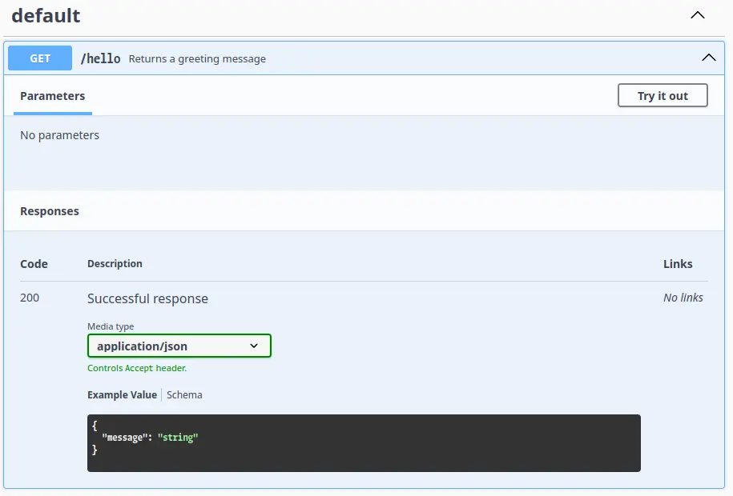
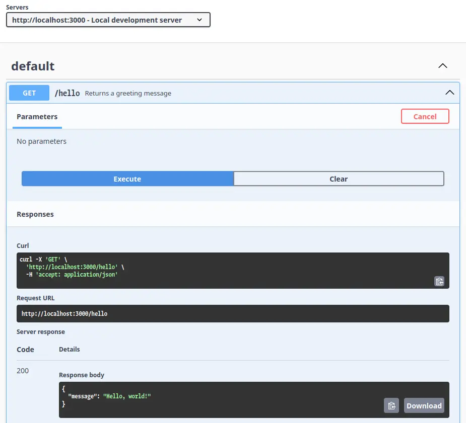

OpenAPI
OpenAPI は、 REST API の仕様を記述・利用するための枠組みです。 OpenAPI の形式で書かれた仕様から、ドキュメントやコード、テストの自動生成ができたりします。
ドキュメントを生成する (Swagger UI)
Swagger UI はドキュメントを生成するツールです。 Redoc という代替もあるようです。
npmでプロジェクトを作ります。npm init -y npm install express swagger-ui-express yamljs touch app.js touch swagger.yamlswagger.yamlに API の仕様を記述します。openapi: 3.0.0 info: title: Simple API version: 1.0.0 paths: /hello: get: summary: Returns a greeting message responses: "200": description: Successful response content: application/json: schema: type: object properties: message: type: stringapp.jsにドキュメントを提供するアプリを記述します。const express = require("express"); const swaggerUi = require("swagger-ui-express"); const yaml = require("yamljs"); const app = express(); const swaggerDocument = yaml.load("./swagger.yaml"); app.use("/api-docs", swaggerUi.serve, swaggerUi.setup(swaggerDocument)); app.listen(3000, () => { console.log("Server running at http://localhost:3000/api-docs"); });- 実行します。
node app.js
サーバにアクセスすると次の画面が表示されます。
画像

API を試す (Swagger UI)
Swagger UI では、ドキュメント上で実際に API を叩けます。
app.jsに REST API を追加する。app.get('/hello', (req, res) => { res.json({ message: 'Hello, world!' }); });swagger.yamlに接続先サーバを記述する。info: ... servers: - url: http://localhost:3000 description: Local development server
サーバの選択や、 API へのアクセスが可能になります。
画像

参考
- ChatGPT